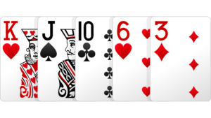
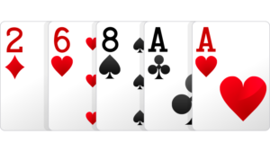
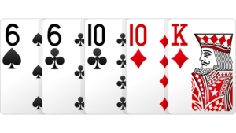
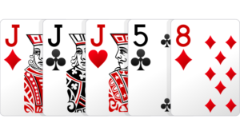
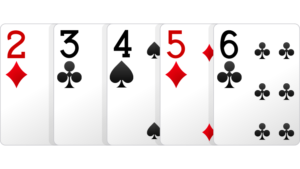
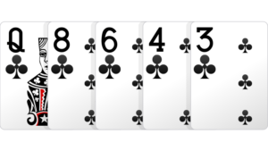
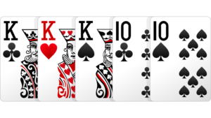
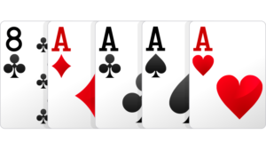
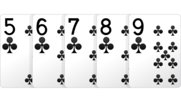

You can win a hand of poker two ways: either by forcing all your opponents to fold their cards or by having the best hand at showdown. You therefore need to know the ranking of poker hands, ie, what beats what. In Texas Hold’em, players make the best hand using their two hole cards and the five community cards. A poker hand must consist of five cards, and it does not matter how many of your hole cards you use. Sometimes you will use both, sometimes only one and on some occasions none of your hole cards will be used. If the community cards, for example, were A♥K♥Q♥J♥10♥ then all remaining players will have a royal flush. It is impossible to beat this hand with any hole cards.
All the suits in poker are of equal value. It makes no difference whether someone has the ace of clubs or the ace of diamonds. If remaining players have exactly the same hand at showdown, only in different suits, the pot is split.
Hand Ranking
The value of poker hands is determined by how rare or common it is to be dealt them, with the most common hands valued lower than the rarer hands. The complete list of poker hands is as follows, in increasing order of scarcity:
- High card
- One pair
- Two pair
- Three of a kind (sometimes called “trips” or “a set”)
- Straight
- Flush
- Full house
- Four of a kind (sometimes called “quads”)
- Straight flush
High Card
If you have no pair, three of a kind, straight, flush, full house, etc., then the highest card in your hand is considered to be decisive. The hand above, in which the best card is an ace and there is no other combination of poker hand, is known as “ace high”. Ace high beats king high. King high beats queen high, and so on. If the high cards in two players’ hands is the same, the second-highest card becomes decisive. If these cards are also the same, the third-highest card plays and so on. These cards are known as the kicker.
High card ace, king kicker:
Both players have an ace, but Player 1 wins, because he has a king as his second highest card (kicker). His opponent only has a queen.
One Pair
If you can form a hand containing two cards of the same value, you have a pair. The hand above contains a pair of aces, with a king kicker. A pair of aces beats any other hand containing only a pair in NLHE (aces are high in poker). The king would be decisive if an opponent also had a pair of aces.
Two Pair
If you have two different pairs in your hand, then you have “two pair”. In the hand above, you have two pair, kings and queens. The ranking of the cards is important. Two pair, kings and queens, beats queens and jacks, for example. And the biggest pair is always decisive. Two pair, aces and threes, beats two pair, kings and queens. (A♣A♦3♣3♦4♣ is better than K♣K♦Q♣Q♦4♣) If two players have the same two pairs, then the fifth card in the hand is decisive. (3♣3♦6♠6♥A♠ beats 3♣3♦6♠6♥10♦)
Two Pair
If you have two different pairs in your hand, then you have “two pair”. In the hand above, you have two pair, kings and queens. The ranking of the cards is important. Two pair, kings and queens, beats queens and jacks, for example. And the biggest pair is always decisive. Two pair, aces and threes, beats two pair, kings and queens. (A♣A♦3♣3♦4♣ is better than K♣K♦Q♣Q♦4♣) If two players have the same two pairs, then the fifth card in the hand is decisive. (3♣3♦6♠6♥A♠ beats 3♣3♦6♠6♥10♦)
Three of a Kind
Three cards of the same rank is known as “three of a kind” – sometimes known as “trips” or “a set”, depending on the precise formation of the hand. You have a set when your hole cards contain a pair and one of the community cards is of the same rank. If you have 7♦7♥ and the board is A♣K♣7♠6♥J♦, then you have a set with 7♦7♥7♠. Trips is when there is already a pair on the board and one of your hole cards is of the same rank. A set is preferable to trips, because with trips you have the problem that one of your opponents may have the same three of a kind, but with a better kicker or even as a full house.
Straight
A straight consists of five consecutive cards of different suits. The hand above is a “king high straight” as the highest card is a king. If two players have a straight, then the highest card wins.
Flush
A flush consists of five non-consecutive cards of the same suit. It doesn’t matter which suit you are holding, and the rank of the cards is only important if you are up against another flush. The “nut flush” is the name given to the highest possible flush, typically ace high. If your hole cards are A♥K♥ and the flop comes Q♥4♥10♥, you have flopped the nut flush. If two players have a Flush, the player with the highest card wins. If both players have the same high card, the second-highest card wins, etc. If Player 1 has 3♠8♠ and Player 2 has A♦9♠ on a board of A♠Q♠10♥7♠2♠, then Player 2 wins with a flush containing the 9♠, which is ahead of Player 1’s 8♠.
Full House
A full house consists of three of a kind plus a pair. The hand above is called “aces full of sevens” because the player has three aces and two sevens. The rank of the card in the three-of-a-kind is decisive, so A♣A♦A♥7♣7♦ beats 7♣7♦7♠A♦A♣. In poker jargon, a full house is also known as a “boat”.
Four of a Kind
Four of a kind, also known as quads, consists of four cards of the same rank and one card of another rank. If two players have four of a kind, which is very rare, then the four of a kind with the highest card rank wins. If two players have the same four of a kind, then the kicker card is decisive.
Straight Flush
A straight flush is five consecutive cards of the same suit. If two players have a straight flush then the highest card wins. The highest possible straight flush, and the best hand in poker, is an ace high straight flush, also known as a…
Royal Flush
A royal flush consists of a straight from ten to the ace with all five cards of the same suit (A♥K♥Q♥J♥10♥). A royal flush is exceptionally rare and is therefore the most coveted hand in poker.
Split Pot
If two or more players reach showdown with a hand that is of equal value, then the pot is split and each remaining player gets the same amount. For example, if Player 1 has A♥2♥ and Player 2 is holding A♦9♦ on a board of A♣Q♥8♥8♣3♣, then both players have two pair (aces and eights) with a queen kicker. The 9♦ is higher than the 2♠, but it doesn’t play, because only the best five-card poker hand counts. It is a split pot. The pot would also be split in the following example: Player 1 is holding 5♠4♥ and Player 2 has A♦A♠ on a board of Q♣J♥10♥9♣8♣. Both players have the identical straight. The pair of aces doesn’t play, since it doesn’t contribute to building the best possible five-card poker hand. Split pots often occur in Hold’em, because five of the available seven cards are identical for all players. If the last two cards are of same rank as well, or aren’t required to form the best possible hand, then the pot is split automatically. When both players start with similar hands, e.g. 7♣8♣ against 8♥7♥, the result is almost always a split pot.
The Kicker
As already mentioned in some of the previous examples, a kicker determines who wins a showdown if two players have the same hand. It is not a key component in building the hand, but it can decide who wins if two players have similar hands. A hand consists of five cards, but only a straight, flush, full house and straight flush use all five cards. However, with hands where not all of the cards are required to make the hand, such as three of a kind or two pair, the remaining cards can be decisive. If Player 1 can form A♠J♥8♠6♣7♣ and Player 2 A♠J♥10♣9♦6♣, the the 10♣ in Player 2’s hand is decisive. In another hand, if Player 1 has K♥Q♥ and Player 2 has Q♣J♦, with the board showing Q♠Q♦7♣A♠2♥, then Player 1 wins. Although both players have three queens, Player 1’s K♥ is decisive.
Back to selection list